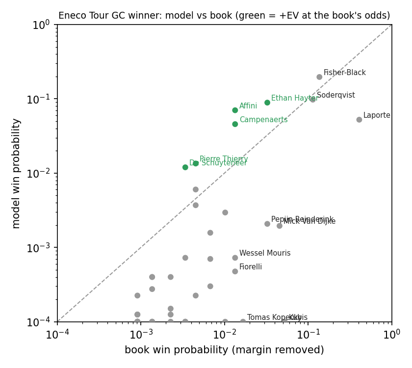
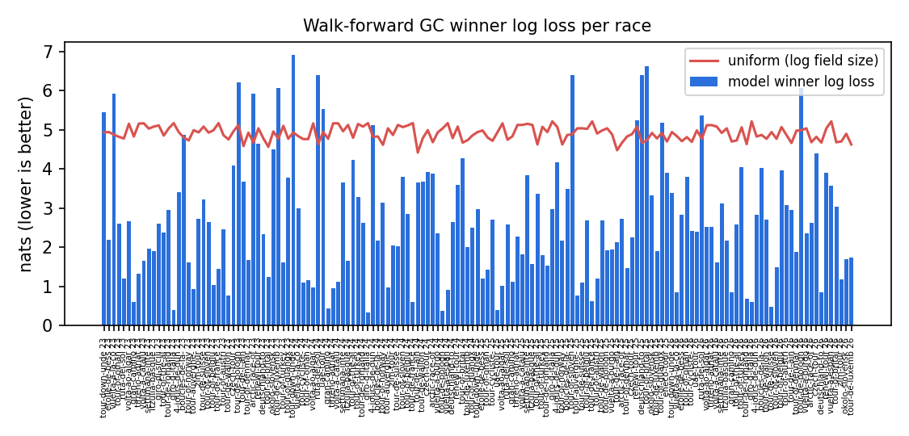
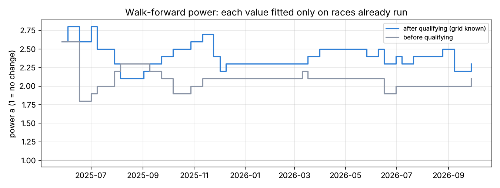
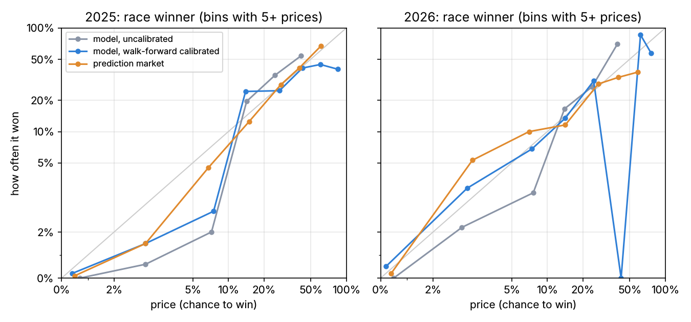
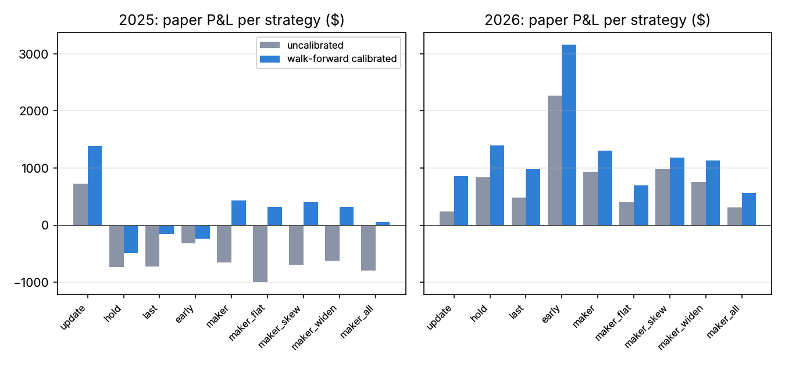

DITL, 14 Oct 2026, Part 1: cycling bets, Austin prep and Probalytics testing
Contents
DITL, 14 Oct 2026, Part 1: cycling bets, Austin prep and Probalytics testing¶
Short summary. Over two days we priced a cycling stage race with a new model built on the day, prepared our F1 model for the US Grand Prix by fixing how flat its prices are, and checked our backtests against an independent full-depth copy of the 2026 F1 prediction-market order books from Probalytics. The tracked cycling slip lost all three bets (-$78.39 on $78.39, paper only), the F1 calibration improved accuracy and every paper strategy on two seasons of recorded prices, and the vendor data showed our one-price fills are about right on race-winner markets but 40% or more too cheap on thin ones. Part 2 follows in about two weeks, once the bets settle and our F1 and cycling strategies are locked in.
All times are UTC (Pacific time is 7 hours behind). Nothing here is betting advice, and no real money was bet.
Where we started: entry conditions on 13 Oct¶
racinglines prices motor races (F1, NASCAR, MotoGP) from its own simulation and compares those prices with prediction markets (Polymarket, Kalshi, OG.com) and sportsbooks. The code has been public since 1 Oct, and the exchange recorders poll prices every 5 minutes. A DITL ("Day in the Life", as in spacecraft testing) is a stretch of real operations written up in the same format each time. This is Part 1 of one covering 13 and 14 Oct.
Coming into these two days:
- The F1 model was known to be too flat. Its favourites won more often than it said; fixing that was roadmap item C48.
- Our backtests ran only on our own tape: the top 10 levels of each book, recorded every 1 to 5 minutes and only since 30 Sep, with every order filled in full at one price. We had no way to say how optimistic that was.
- Probalytics (a data vendor with full-depth order books on every change) had been probed on 8 Oct, and its 2026 F1 archive was downloading to the owner's Mac.
- There was no stage-race model for cycling. We could price a single time trial, but nothing that simulates a week-long race to its overall classification (GC).
- The goal for October to early November (G1) is to prove an edge: closing-line value above +2% over 100 live bets. Real money waits for six or more live race weekends that reconcile.
What ran¶
Three tracks ran across the two days, all on staging (production was not touched):
- Cycling bets (13 to 14 Oct). A sportsbook's Eneco Tour boards arrived about 45 minutes before the book closed. We posted a first slip from the time-trial model, built and fitted a stage-race GC model during the afternoon, missed the book's close with it, and kept the analysis going as paper slips v1 to v4. On 14 Oct we looked at a Tour of Guangxi stage and passed.
- Austin prep (14 Oct). We priced a sportsbook's opening US Grand Prix futures board against our model, found the model too flat, and built and leak-tested a calibration fix.
- Probalytics update and testing (14 Oct). We uploaded the vendor's 2026 F1 archive to our cloud bucket, compared it with our own tape, measured how wrong our backtest's fill prices are against the full book, and re-ran our benchmark ("golden") backtest on both tapes. A smaller thread cut the regression suite's CI time roughly in half.
The owner ran every VM and Mac command by hand from the threads; Claude Code sessions wrote the code, the commands and the reports.
Stats¶
| Cycling bets | Austin prep | Probalytics | |
|---|---|---|---|
| Looked at | Eneco prologue and GC boards; Guangxi stage 2 boards | 33 sportsbook lines (22 race winner, 11 constructor) | 1,314 F1 files, 19.6 GiB |
| Picked (tracked, paper) | 3 bets, $78.39 | 0 (annotated board only) | n/a |
| Placed | 0 | 0 | n/a |
| Won / lost / void | 0 / 3 / 0 | n/a | n/a |
| P&L | -$78.39 | n/a | n/a |
| Analysis slips | v1 to v4; v4 prologue settled -$1.15, GC lines open | Before/after calibration view | 3 golden runs, 2 probes |
| Code | GC model (#177) | Calibration (#209), constructor re-price (#211) | Kalshi de-duplication (#201), new fill options (#205) |
| Test result | Walk-forward 2.69 vs 4.91 nats on 151 races | 2026 log loss 0.2244 to 0.2194 (market 0.2222) | Fills -0.6% (race winner) to -47% (constructor) on Polymarket |
Pull requests merged into staging on 14 Oct: #199 to #203 and #205 to #208, plus #209 and #210 at about 00:10 UTC on 15 Oct. Merges to production: 0. The regression step in CI went from 4 min 13 s to 2 min 13 s (#207). The Probalytics road-cycling archive (329 of 329 files) finished downloading to the owner's Mac at 23:52 UTC; its bucket upload is deferred.
Objectives and results¶
| Objective | Result | Status |
|---|---|---|
| Price the Eneco Tour before the book closes | Prologue slip posted at 15:21; calibrated GC prices ready at 16:58, about 56 min after the close | Partly met |
| A fitted, validated stage-race GC model | 2.69 vs 4.91 nats for a random pick, walk-forward on 151 races (#177) | Met |
| Don't bet where the model can't price | Guangxi: the model's favourite won 8% of 233 flat stages; passed | Met |
| F1 calibration with a leak test | 31 cut points scrambled, no earlier power changed; #209 on staging, off by default | Met |
| Before/after view of the US GP board | Race-winner and constructor rows re-priced together (10,000 sims, same cutoff) | Met |
| Vendor F1 archive in our bucket, verified | 1,314 files; checksum dry-run sync 0 differences | Met |
| Our tape matches the vendor's (price within 1 cent on 95% of points, trades within 5% per weekend) | Polymarket 89.2%; Kalshi 52.6% (75.7% on our quote mid); Kalshi trades exact on 12 of 17 weekends | Not met (gaps explained in Part C) |
| Measure the backtest's fill-price error | Median error by market type, per venue | Met |
| No drift since the 12 Oct golden run | Maker P&L identical (868 = 868, 795 = 795) | Met |
| Old vs new pipeline comparison | First table done; spread, book-walk and calibrated runs to come | Partly met |
| Faster regression suite | 4 min 13 s to 2 min 13 s, same results | Met |
Ops timeline¶
| Time (UTC) | Event |
|---|---|
| 13 Oct 15:15 | Eneco boards arrive: GC and prologue winners, GC and prologue matchups |
| 15:21 | First slip posted: 3 prologue bets, $78.39 (the tracked set) |
| 15:31 to 15:40 | Stage fetcher and GC model pushed |
| 15:44 | Owner: "we will not make the window" |
| about 16:00 | Sportsbook closes the Eneco boards |
| 16:30 | Full stage history fetched: 207 races, 1,353 stages |
| 16:58 | Calibrated GC prices ready |
| 17:15 | Analysis slip v1 (each bet sized alone) |
| 22:06 | Analysis slip v2: all bets sized together in one Kelly run |
| 14 Oct 02:08 | Tour of Guangxi stage 2 priced and checked; passed |
| 03:35 | NASCAR set as the next Probalytics sport after a read-only coverage probe |
| 06:55 | Production model run 9955 prices the US Grand Prix |
| 16:14 | Analysis slip v4: prologue and GC as one event, starters only |
| 21:40 | Vendor F1 archive upload finishes: 1,314 of 1,314 files |
| 21:45 | Checksum dry-run sync: 0 differences |
| 21:56 | Duplicate Kalshi fills found in the vendor tape (fix in #201) |
| 22:17 | Fill-error probe: Polymarket one-price fills far too cheap on thin markets |
| 22:45 | Golden run on the vendor tape finishes (a 22:27 attempt ran out of memory) |
| 22:58 | Sportsbook's US Grand Prix futures board arrives; priced and annotated, not placed |
| 23:01 | Golden run on our tape: no drift vs 12 Oct |
| 23:20 | Session-overrun leak logged as P0 (#208) |
| 23:40 | Golden run on the vendor tape, buying at the ask, finishes |
| 23:52 | Probalytics road-cycling download finishes on the Mac; calibration PR #209 opened |
| 15 Oct 00:10 | #209 and #210 merged to staging |
| 00:24 | Walk-forward strategy pool finishes: +$1,082 choosing as you go vs +$2,063 in hindsight |
Part A: Cycling bets¶
The tracked slip. The Eneco Tour boards came in at 15:15 UTC on 13 Oct with the book's countdown showing about 47 minutes to its close. Six minutes later we posted a first slip from the existing time-trial model. That slip is the one we track, because, in the owner's words, "I would have just placed those bets and not looked into the further modeling right away." Nothing was actually placed.
| Bet | Odds | Stake | Result | Net |
|---|---|---|---|---|
| Fisher-Black over Laporte (prologue head-to-head) | 2.55 | $70.52 | lost (6th vs 3rd) | -$70.52 |
| Fisher-Black to win the prologue | 13 | $6.42 | lost | -$6.42 |
| Campenaerts to win the prologue | 51 | $1.45 | lost | -$1.45 |
| Total | $78.39 | 0 won, 3 lost | -$78.39 |
The GC model, built on the day. The owner asked for a fitted model at 15:22 UTC. Claude Code wrote a stage fetcher and a stage-race GC simulator (racinglines model gc-price and gc-backtest, PR #177, now on staging): it refits a time-trial rating and a road rating on results before the race, then simulates every stage over the real starters, bonus seconds included. Fetching the full history (207 races, 1,353 stages) took 50 minutes at the site's pace, and the calibrated prices were ready at 16:58 UTC, about 56 minutes after the book closed. The window was lost to data, not to the model.

Walk-forward on 151 stage races from 2023 to 2026, each priced as of the first of its month, the chosen settings scored 2.69 nats of winner log loss against 4.91 for a random pick. The model's favourite won 33% of the time against a predicted 25%. The main finding was that time gaps borrowed from past road stages spread the GC too widely; shrinking them to a tenth (road_gap_scale 0.1) helped most. The chosen settings (road noise 1.25, time-trial noise 1.15, road-gap scale 0.1, short time-trial noise 2.0) still need decision-log entries before they count as final.

Analysis slips (not tracked). We kept refining the slip after the close, to learn how the method behaves, not to score it:
| Slip | Time (UTC) | What changed | Lines | Stake |
|---|---|---|---|---|
| v1 | 13 Oct 17:15 | Model and book blended 50/50, each bet sized alone, GC only | 11 | $173.90 |
| v2 | 22:06 | Model only, joint quarter Kelly over all 68 GC sides | 12 | $243.71 |
| v3 | after the prologue | v2 re-run with the real prologue gaps | 12 | $239.32 |
| v4 | 14 Oct 16:14 | Prologue and GC as one event, starters only, 5% minimum edge | 28 | $237.49 |

Slip v1 drawn on the sportsbook's own screenshots: a ring and paper stake on each bet, the model's chance and the book's no-margin chance under each rider, and the expected value per $1.
v4's 13 prologue lines ($97.88) settled at -$1.15: two won (Reinderink over Lanhove at 2.55, +$38.27; W. Mouris over Van Dijke at 2.25, +$8.55), ten lost and one was void. Its 15 GC lines ($139.61) settle after the final stage on Sun 18 Oct. At the model's probabilities v4 had an expected value of +$177 and a 21% chance of losing money, with a worst case of -$237.

Slip v4, all 28 lines. Prologue lines carry their result; the overall (GC) lines are pending until 18 Oct. Paper only.
Tour of Guangxi, stage 2: passed. On 14 Oct at about 02:03 UTC we priced a flat stage and checked the model on the market's history first. Over 233 flat and rolling stages it scored 4.12 nats against 4.94 for a random pick, and its favourite won only 8% of the time. The road model has no sprint skill, so we passed.
Part B: Austin prep and F1 calibration¶
Austin (round 18) is the first of the six races left in the F1 season. Production run 9955 gave the US Grand Prix favourite a 15% chance to win, where the prediction market said 41%. Over 40 races, drivers the model priced at 35% or more after qualifying won 70% of the time (16 of 23). The fix raises every win chance to a power a and renormalises, fitted walk-forward: each power uses only races already run, with one value for prices after qualifying and one for before. The powers settled near 2.3 and 2.1.

| Before | After | |
|---|---|---|
| Race-win log loss, 2025 (market 0.1439) | 0.1694 | 0.1627 |
| Race-win log loss, 2026 (market 0.2222) | 0.2244 | 0.2194 |
| Calibration error (ECE), 2025 / 2026 | 0.0313 / 0.0232 | 0.0240 / 0.0191 |
| Strategy-seasons with better paper P&L | 18 of 18 | |
| US GP favourite's win chance (market 41%) | 15% | 21% |
| Race-winner bets on the sportsbook board | 9, $41 | 9, $57 |
| Red Bull to win the constructors' race (market 44%) | 24% | 28% |
| Leak check (31 cut points, later results scrambled) | no earlier power changed |


The board, before and after. The owner shared a crypto sportsbook's US Grand Prix futures board at 22:58 UTC and asked for an annotated view "as if we were looking to place bets now", not recorded. Before calibration the slip came to $60 across 12 lines, including four $1 tickets on 501-to-1 drivers that the flat model priced at 5 to 9 times their stake in expected value. The after side is one re-price of the whole board, race winner and constructor, at the same 06:55 UTC cutoff with 10,000 simulations. The favourite moves to 21%, still far below the market's 41%, so most of the gap is the model's ranking of drivers, not only flatness. Stakes shift toward the contenders, and the 501-to-1 drivers drop under 0.5%, leaving three $1 tickets worth under 1 times their stake. Red Bull rises from 24% to 28% for the constructors, against the market's 44%. Nothing was placed.

The sportsbook's own screenshot with our annotations: the model's chance and the prediction market's price on each line, a ring and a paper stake on each line we would have bet, and the expected value per $1. Paper only; nothing was placed.
Part C: Probalytics update and testing¶
The question: when a backtest says a strategy made money, would those trades really have filled at those prices? Our own recorder keeps the top 10 levels of each book every 1 to 5 minutes, and only since 30 Sep. The vendor keeps full depth on every change: Kalshi from 9 May 2026, Polymarket from November 2025. So their tape can test fills that ours cannot.
Tape comparison. Where both tapes cover a market, prices mostly agree, but the first run failed every pass mark. The breakdown explained most of it. Kalshi trade counts were identical on 12 of 17 weekends. One weekend showed exactly twice our count, which came from duplicate rows in the vendor's Kalshi fills (97,432 of 298,487 in July, 8,127 in June); #201 keeps one row per fill id. Each tape also had a hole the other filled around the Bahrain race: we stored no Kalshi F1 trades from 30 Sep to 8 Oct (they have 22,771), and they have no fills for the Bahrain Polymarket race markets, which we have.
Fill error. The backtest fills each order in full at one price. A probe walked the same orders through the vendor's full book at every stage of the 2026 season. For $50 Polymarket orders, the median error was -0.6% on race-winner markets, -6% on pole, -18% on podium, -42% on head-to-heads and -47% on winning-constructor markets. On those thin markets our 5-minute price sits near 0.50, while the real book is often around 0.10 bid and 0.89 ask, so a buy pays about 0.89. Kalshi came out about 0% for every market type, because its backtest already buys at the ask. New fill options followed in #205: buy at the ask, skip markets with a spread over a limit, and walk the book level by level.
Old vs new. The golden backtest ("profile A", rounds 1 to 15 of 2026 on Polymarket, mean of 3 seeds; Kalshi rounds 5 to 15):
| Tape and fill | Polymarket P&L | Trades | Kalshi P&L |
|---|---|---|---|
| Our tape, one price (old) | +$1,246 | 319 | +$1,096 |
| Vendor tape, mid | +$3,272 | 294 | n/a |
| Vendor tape, buy at the ask (new) | +$1,669 | 233 | +$358 |
Paying the spread removes about half of the vendor-tape result at the mid. Each tape flatters us in a different place. On Kalshi, where only the tape differs, our tape's +$1,096 against +$358 comes mostly from the British GP (+$1,028 vs +$296): our 5-minute snapshots let the backtest buy at quotes that had already moved. On Polymarket the vendor tape at the ask ends about $420 above ours, driven by single weekends (Monaco +$642 vs +$40). Across both venues through round 15: +$2,342 on our tape, +$2,027 on the vendor tape at the ask. The Polymarket row changes two things at once, because our tape has no Polymarket books before 30 Sep.
Choosing as you go. A walk-forward pool, finished at 00:24 UTC on 15 Oct, picked a setup each weekend using only earlier weekends. It made +$1,082, against +$2,063 for the best setup chosen with hindsight. A 10-cent spread limit helped on both venues, a 5% minimum edge lost money on Kalshi, and no setup clearly beat profile A. The rest of the queue (a 2025 holdout, the spread limit on both tapes, calibration on both tapes and the full book walk) runs next and feeds Part 2.
Caveat. All of this is in-sample. Profile A was tuned on 2026, and tonight's fill settings were picked after seeing the season. The numbers are good for "which tape and fill rule is closer to reality", not for "this strategy makes money".
Anomalies¶
| # | Anomaly | Status |
|---|---|---|
| A1 | Comparison and first golden run ran out of memory loading the full Singapore day books on a 2-vCPU VM | Closed: books set aside, stage files used; memory fix in #201 |
| A2 | Vendor's Kalshi fills contain duplicate rows | Closed in our code (#201); to raise with the vendor |
| A3 | Each tape missing Bahrain data the other has | Open |
| A4 | Backtest Polymarket fills 42 to 47% too cheap on head-to-head and constructor markets | Partly: buy-at-ask in #205; spread and book-walk runs pending |
| A5 | Stage cutoff is the scheduled session end plus 30 minutes, not the actual end; a session running late (red flags) could let the model see results the market had not | Open: P0 in the to-do list (#208) |
| A6 | A misclick cancelled #203's staging deploy | Closed: #205's deploy carried it |
| A7 | Vendor Polymarket trade counts run 1.4 to 1.7 times ours; our reading (not confirmed) is a counting convention | Open |
| A8 | Calibrated constructor prices not computed at first | Closed: re-priced on the VM (#211) |
| A9 | The sportsbook's close was first logged as 16:34 (the first rider's start); it was about 16:00 | Closed here; the owner's Mac copy still to correct |
| A10 | The GC model's calibrated prices arrived about 56 min after the close, because fetching 1,353 stage pages took 50 min | Open: keep stage history fetched ahead of race weeks |
| A11 | The joint Kelly sizing crashed when every candidate was staked | Closed: guard on #177 |
| A12 | The GC pricer simulated book names that were not on the start list | Closed: starter filter on #177 |
| A13 | The road model has no sprint skill | Open: sprinter rating planned; sprint stages passed until then |
| A14 | The stage fetcher can cache a start-order page as a result, and a race still running was scored as finished | Open |
Lessons¶
- Data before the window, not during it. The cycling model was ready an hour too late because its history was fetched on the day. The first slip, made quickly from what we had, is the honest record.
- Check the checker. The vendor tape was wrong in a way only our own tape could reveal (duplicate fills), and ours was wrong in ways only theirs could reveal (stale quotes, missing days). Neither is the truth alone.
- Pass when the model can't price. Guangxi took six minutes to check and pass; a sprint stage priced by a model with no sprint skill would have been a guess.
- Leaks hide in choices, not only code. The code audit was clean apart from A5, but settings picked after seeing the season make every 2026 number in-sample.
- One queue at a time. The VM has 2 vCPUs, and a staging deploy mid-run swaps the code under a sweep, so merges waited for gaps between runs.
Where we're heading: what Part 2 will cover¶
Part 1 ends with nothing proven: every F1 profit figure here is in-sample, and the cycling results so far are three losing bets and a nearly flat analysis slip. The next two weeks are set up so that Part 2 can say something out of sample.
- Settlement. The v4 GC lines settle after the Eneco Tour's final stage on Sun 18 Oct. Part 2 reports them in full next to the tracked slip.
- Strategies locked before the races (owner rule, 15 Oct). For the rest of the F1 season, rounds 18 to 23, every paper trade follows one strategy written down and committed before each event's first session, starting with US GP practice one on Fri 23 Oct, 17:30 UTC. Bets added after a session (for example after qualifying) use the same strategy at that moment's prices and are timestamped when made. Everything is scored as bet, at its recorded price, whether or not it was placed anywhere. A later re-tune counts only from its own date.
- Chosen from the latest backtests on Probalytics data. Before the lock, the remaining runs finish on both tapes: buy at the ask, a spread limit, walking the full book, calibrated vs uncalibrated, and a 2025 holdout on three weekends the tuning never saw (Las Vegas, Qatar, Abu Dhabi). The session-overrun fix (A5) is due before then.
- Cycling through year end. Any cycling strategy is locked the same way before its race, with the GC model's settings entered in the decision log.
Part 2 will report: the settled cycling slips, the locked F1 and cycling strategies and the backtests behind them, the first out-of-sample results from Austin onward, and a verdict on the old vs new backtest pipeline. We revisit in about two weeks.
What this does and doesn't show¶
- It shows our backtest's one-price fills are close on liquid race-winner markets and badly optimistic on thin ones, measured against an independent full-depth book.
- It shows a single fitted power, using only earlier races, makes a flat F1 model score and paper-trade better on two seasons of recorded prices.
- It shows a stage-race GC model built in an afternoon beats a random pick by a wide margin walk-forward, and that our road model can't price sprints.
- It doesn't show that any strategy makes money. Every F1 P&L figure is in-sample, before the session-overrun fix, and on paper; the cycling sample is one race.
- It doesn't show the calibration holds on new races. Austin onward is the real test, which is what Part 2 is for.
- It doesn't fix every price range. F1 drivers priced at 10 to 20% still win more often than their price says (24% won, across 201 prices), so a single power is not the whole answer. The setting stays off by default; making it the default is the owner's call.
- No real bets were placed. The cycling slips are paper, and the US GP board was annotated for illustration only.